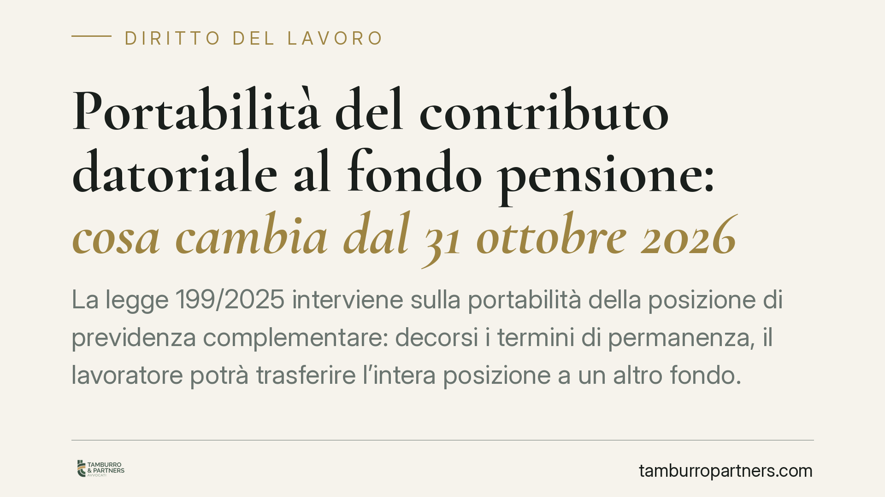

Portabilità del contributo datoriale al fondo pensione: cosa cambia dal 31 ottobre 2026
La legge 199/2025 interviene sulla portabilità della posizione di previdenza complementare: decorsi i termini di permanenza, il lavoratore potrà trasferire l'intera posizione a un altro fondo. Il punto sensibile è la sorte del contributo datoriale. Per le imprese cambiano assetti contrattuali e procedure interne. Il quadro va però letto insieme ai provvedimenti attuativi e alla contrattazione collettiva.

Portabilità del contributo datoriale al fondo pensione: il nodo della riforma
La questione non è nuova, ma la legge 199/2025 (legge di bilancio 2026) la riporta al centro. Occorre però distinguere due profili che spesso vengono confusi.
Il primo è la portabilità della posizione individuale: la facoltà del lavoratore di trasferire ad altra forma pensionistica il montante accumulato. Questa possibilità esiste già oggi nell'ordinamento.
Il secondo, molto più delicato, è la sorte del contributo datoriale in caso di trasferimento verso un fondo diverso da quello previsto dal contratto collettivo. È su questo punto che si gioca la portata effettiva della novità.
Il quadro normativo di riferimento
La disciplina generale resta quella del d.lgs. 252/2005. L'art. 14 regola le ipotesi di trasferimento della posizione individuale, distinguendo almeno due fattispecie diverse:
- il trasferimento per perdita dei requisiti di partecipazione (ad esempio per cessazione o cambio del rapporto di lavoro), che non è soggetto al termine di permanenza;
- il trasferimento volontario ad altra forma pensionistica, subordinato a un'anzianità minima di partecipazione — nel testo vigente biennale.
*Il comma esatto e la decorrenza vanno verificati sul testo coordinato: la formulazione della legge 199/2025 e le sue interazioni con l'art. 14 d.lgs. 252/2005 richiedono riscontro diretto sulla Gazzetta Ufficiale.*
L'intervento del 2026, secondo le ricostruzioni disponibili, mira a consentire che anche il contributo del datore di lavoro «segua» il lavoratore nel fondo prescelto, superando il vincolo che oggi lo àncora alla sola forma pensionistica di fonte collettiva. La data indicata di decorrenza è il 31 ottobre 2026.
Il vero nodo: legge e contrattazione collettiva
Il contributo datoriale alla previdenza complementare nasce, nella gran parte dei casi, da accordi collettivi: sono i contratti di categoria o aziendali a istituirlo, a quantificarlo e a destinarlo a uno specifico fondo negoziale.
Qui sta la tensione. Una norma di legge che renda il contributo portabile verso qualsiasi fondo incide su un meccanismo regolato dall'autonomia collettiva. Il coordinamento tra la fonte legale e la fonte contrattuale determinerà quanto la portabilità sarà effettiva e con quali eventuali condizioni.
Molto dipenderà anche dai provvedimenti attuativi della COVIP, l'autorità di vigilanza sui fondi pensione, chiamata a definire regole operative e tempistiche dei trasferimenti.
Implicazioni pratiche per le imprese
Per il datore di lavoro le conseguenze non sono soltanto teoriche.
Se il contributo aziendale diventa trasferibile, l'impresa potrebbe doverlo versare a fondi diversi da quello previsto dal proprio CCNL, con un aumento della complessità amministrativa: più interlocutori, più flussi, più adempimenti.
Cambia anche l'equilibrio dei fondi negoziali, costruiti sulla stabilità delle adesioni di categoria. Una maggiore mobilità delle posizioni può incidere sulla loro dimensione e sulla gestione.
Sul piano dei rapporti con i dipendenti, è prevedibile un aumento delle richieste di informazioni e delle istanze di trasferimento, che l'ufficio del personale deve essere in grado di gestire in modo corretto e neutrale.
Cosa fare in concreto
- Verificate il testo definitivo della legge 199/2025 e le sue interazioni con l'art. 14 d.lgs. 252/2005 sulla Gazzetta Ufficiale, prima di assumere decisioni operative.
- Monitorate i provvedimenti attuativi COVIP, che definiranno modalità e tempistiche dei trasferimenti con contributo datoriale.
- Mappate gli accordi collettivi applicati e le clausole che disciplinano il contributo aziendale, per individuare i punti di possibile frizione con la nuova disciplina.
- Adeguate le procedure amministrative e i flussi contributivi, così da disporre di processi gestibili quando il quadro normativo e attuativo sarà definitivo.
- Predisponete un'informativa neutrale ai lavoratori, che illustri le opzioni disponibili senza orientarne le scelte, in coerenza con gli obblighi informativi.
---
Contributo informativo a cura di Tamburro & Partners Avvocati — Avv. Giuseppe Tamburro. Non costituisce parere legale.
Ogni storia di lavoro ha i suoi tempi.
Se gestisci HR e vuoi un confronto su contenzioso, ispezioni o licenziamenti, scrivi allo studio. Ti rispondiamo entro un giorno lavorativo.